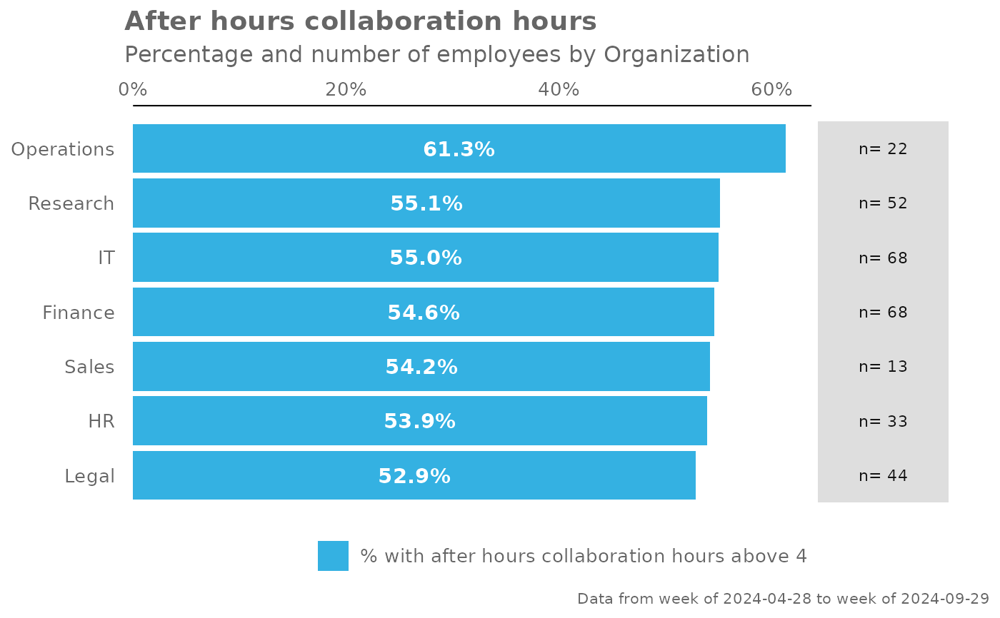
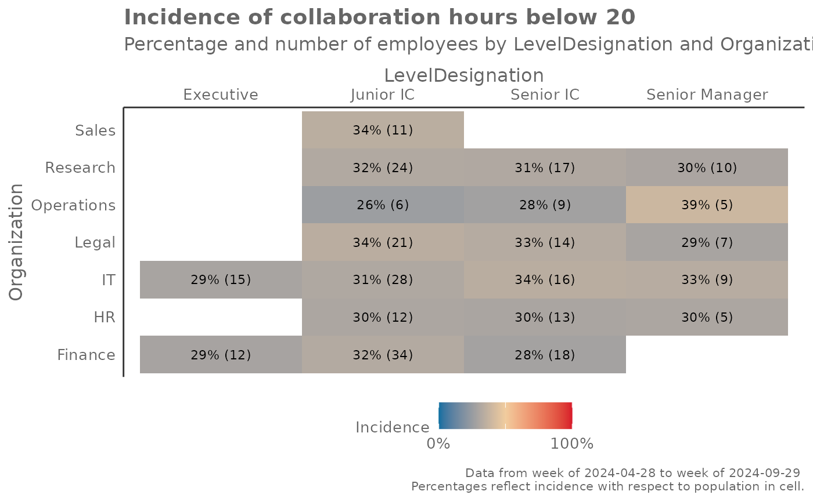

Create an incidence analysis reflecting proportion of population scoring above or below a threshold for a metric
create_inc.RdAn incidence analysis is generated, with each value in the table reflecting
the proportion of the population that is above or below a threshold for a
specified metric. There is an option to only provide a single hrvar in
which a bar plot is generated, or two hrvar values where an incidence table
(heatmap) is generated.
Usage
create_inc(
data,
metric,
hrvar,
mingroup = 5,
threshold,
position,
return = "plot"
)
create_incidence(
data,
metric,
hrvar,
mingroup = 5,
threshold,
position,
return = "plot"
)Arguments
- data
A Standard Person Query dataset in the form of a data frame.
- metric
Character string containing the name of the metric, e.g. "Collaboration_hours"
- hrvar
Character vector of at most length 2 containing the name of the HR Variable by which to split metrics.
- mingroup
Numeric value setting the privacy threshold / minimum group size. Defaults to 5.
- threshold
Numeric value specifying the threshold.
- position
String containing the below valid values:
"above": show incidence of those equal to or above the threshold"below": show incidence of those equal to or below the threshold
- return
String specifying what to return. This must be one of the following strings:
"plot""table"
See
Valuefor more information.
Value
A different output is returned depending on the value passed to the return argument:
"plot": 'ggplot' object. A heat map."table": data frame. A summary table.
See also
Other Visualization:
afterhours_summary(),
collaboration_sum(),
create_bar_asis(),
create_bar(),
create_boxplot(),
create_bubble(),
create_dist(),
create_fizz(),
create_line_asis(),
create_line(),
create_period_scatter(),
create_rank(),
create_scatter(),
create_stacked(),
create_tracking(),
create_trend(),
email_summary(),
hrvar_count(),
meeting_summary()
Other Flexible:
create_bar_asis(),
create_bar(),
create_boxplot(),
create_bubble(),
create_density(),
create_dist(),
create_fizz(),
create_hist(),
create_line_asis(),
create_line(),
create_period_scatter(),
create_rank(),
create_scatter(),
create_stacked(),
create_tracking(),
create_trend()
Examples
# Only a single HR attribute
create_inc(
data = pq_data,
metric = "After_hours_collaboration_hours",
hrvar = "Organization",
threshold = 4,
position = "above"
)

# Two HR attributes
create_inc(
data = pq_data,
metric = "Collaboration_hours",
hrvar = c("LevelDesignation", "Organization"),
threshold = 20,
position = "below"
)
